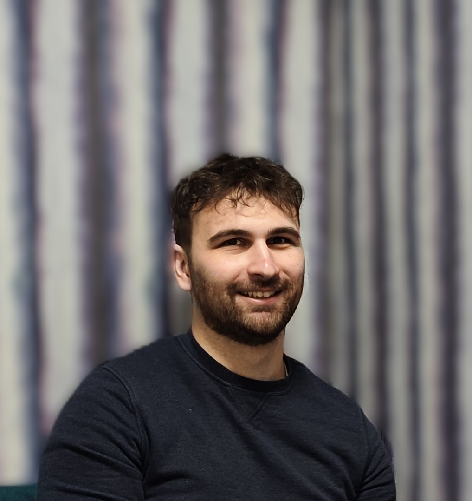

Machine Learning Engineer
NLP • Recommendations • Search • Agentic AI
Thessaloniki, Greece
Machine Learning Engineer with 5+ years of expertise specializing in NLP, Recommendation Solutions, Search, and Agentic AI. Proven track record in designing, deploying, and scaling production-grade machine learning models, complex AI architectures, and real-time user profiling platforms.
Machine Learning Engineer
Machine Learning / Data Engineer
Machine Learning Engineer
Aristotle University of Thessaloniki
Thesis: Interpretable Multi-Label Learning in Biomedical Texts — Grade: 9.5/10.0
University of Macedonia
Thesis: Detecting Toxic Comments and Minimising Unintentional Prejudice Using Neural Networks — Grade: 10.0/10.0
Proposing interpretability techniques (IG, LRP, raw attention) for BERT-based multi-label classification of biomedical texts, with redesigned evaluation metrics for sentence-level explanations.
View on GitHub →Investigating 16 neural architectures (LSTM, GRU, CNN, BERT, RoBERTa, GPT-2) with ensemble learning for toxicity classification, ranking top 6% on Kaggle's Jigsaw competition.
View project page →Keyword extraction from Greek biomedical text using fine-tuned BERT with a diversification method, including a novel scraped Greek biomedical dataset.
View on GitHub →A private, offline Android carbohydrate calculator for diabetes management with custom insulin ratio math, 1,070 foods across 10 languages.
View landing page →Greek: Native · English: C2 / Proficient
Full CV available for download:
Download CV (PDF)